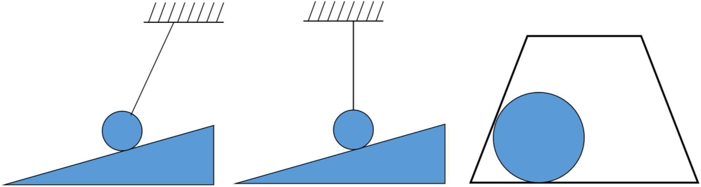
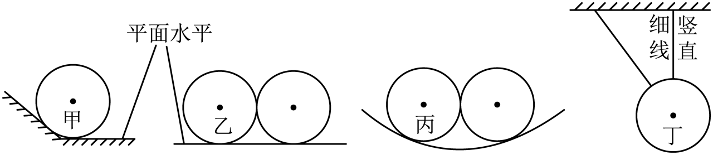
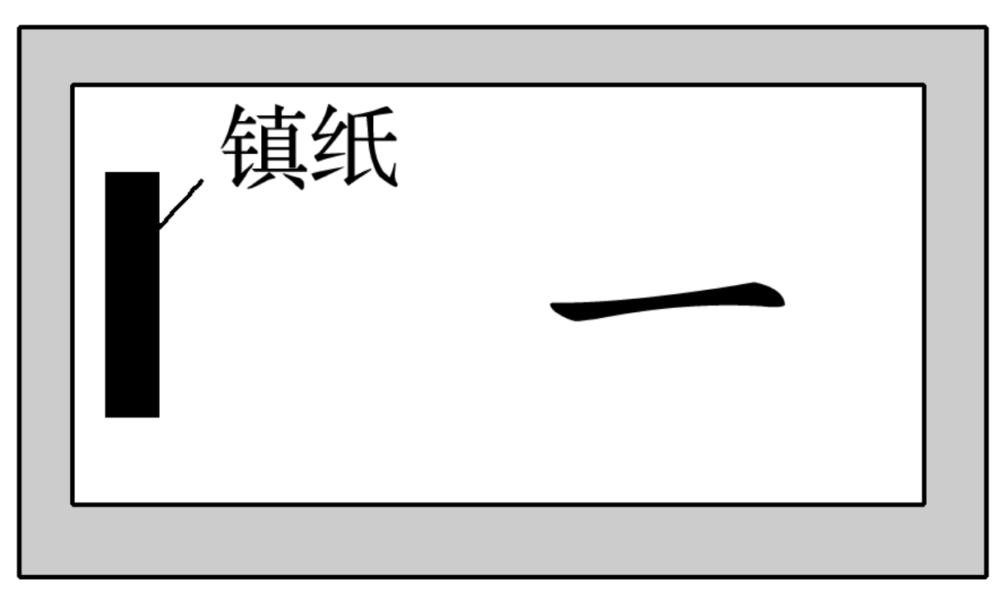

graph LR ElasticForce(弹力) --> Direction(作用方向) ElasticForce --> Condition(施力条件) Direction --> SupportPressure(支持力与压力: 垂直接触面指向受力物体) Direction --> Tension(拉力: 沿着绳子的收缩方向) SupportPressure --> RecoveryDirection(与施力物体恢复形变的方向相同) Tension --> RecoveryDirection Condition --> Conditions(1.相互接触\n 2.弹性形变) %% 设置样式 style RecoveryDirection fill:#f9f,stroke:#333,stroke-width:2px,color:#333
重力 弹力 摩擦力
学考复习
重力
重力：由于地球吸引而使物体受到的力，方向竖直向下，大小为G=mg，这是最基本的力，任何在地球附近的物体都受重力。
弹力
定义: 发生弹性形变的物体，由于要恢复原状，对与它接触的物体会产生力的作用，这种力叫做弹力
重点
- 接触面上的弹力方向判断：垂直接触面指向受力物体（P.S. 如果接触面是曲面，则垂直于曲面在触点的切面）
- 弹力有无的判断方法
- 条件法：根据弹力产生条件——物体是否直接接触并发生弹性形变
- 假设法：假设两个物体间不存在弹力，看物体能否保持原有的状态，若运动状态不变，则此处没有弹力；若运动状态改变，则此处一定有弹力
画出物理受到弹力的示意图 (从接触点开始画)


练习
关于如图中光滑球的受力情况，下列说法正确的是（ ）

A. 甲球和斜斜面之间可能有弹力作用
B. 乙球和与其接触的小球间有弹力作用
C. 丙球和与其接触的小球间有弹力作用
D. 倾斜的细绳可能对丁球有拉力作用
摩擦力
- 定义：两个相互接触的物体，当它们发生相对运动或具有相对运动的趋势时，在接触面上会产生阻碍相对运动或相对运动趋势的力.
- 产生条件
- 接触面粗糙
- 接触处有压力
- 两物体间有相对运动或相对运动趋势
- 方向：与受力物体相对运动或相对运动趋势的方向相反
- 大小：
- 滑动摩擦力：F_{f}＝\mu F_{N}，\mu 为动摩擦因数
- 静摩擦力：F_{f}\in [0,f_{\mathrm{max}}]
graph LR A(分析摩擦力)-->B(方向); A-->C(大小); B-->B1(与相对运动或相对运动趋势相反); C-->Ca(静摩擦); C-->Cb(动摩擦); Ca-->Ca1(受力分析); Cb-->Cb1(套公式);
练习
(多选) 中国书法历史悠久，是中华民族优秀传统文化之一. 在楷书笔画中，长横的写法要领如下：起笔时一顿，然后向右行笔，收笔时略向右按，再向左上回带。某同学在水平桌面上平铺一张白纸，为防打滑，他在白纸的左侧靠近边缘处用镇纸压住，如图所示。则在向右行笔的过程中（ B D ）
A. 镇纸受到向左的摩擦力
B. 毛笔受到向左的摩擦力
C. 白纸只受到向右的摩擦力
D. 桌面受到向右的摩擦力
